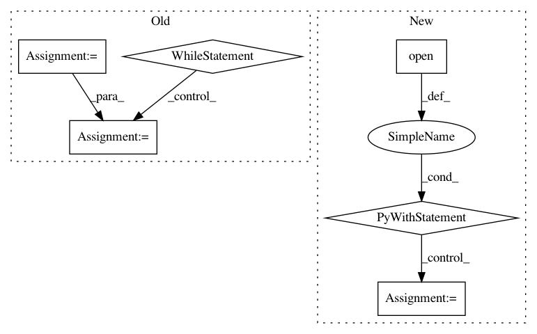

c7c06f56e918cabf565d4e4454daa344137d1f0f,contrib/rl/tictactoe.py,,main,#,151
Before Change
def main():
env = TicTacToeEnvironment()
policy = TicTacToePolicy()
a3c = dc.rl.A3C(env, policy, entropy_weight=0, value_weight=0.25)
a3c.optimizer = dc.models.tensorgraph.TFWrapper(
tf.train.AdamOptimizer, learning_rate=0.01)
a3c.fit(100000)
env.reset()
while not env._terminated:
print(env.display())
print(a3c.predict(env._state))
action = a3c.select_action(env._state)
print(action)
print(env.step(action))
print(env.display())
if __name__ == "__main__":
After Change
print(value_weight)
score = eval_tic_tac_toe(value_weight)
scores[value_weight] = score
with open("tictactoe_value_search.json", "w") as fout:
fout.write(json.dumps(scores))
value_weight += 0.05
In pattern: SUPERPATTERN
Frequency: 3
Non-data size: 6
Instances
Project Name: deepchem/deepchem
Commit Name: c7c06f56e918cabf565d4e4454daa344137d1f0f
Time: 2017-05-25
Author: Karl
File Name: contrib/rl/tictactoe.py
Class Name:
Method Name: main
Project Name: pytorch/examples
Commit Name: 7b205efea6b504de04311bc55d109cd28d8f3e0c
Time: 2016-12-21
Author: alerer@fb.com
File Name: OpenNMT/preprocess.py
Class Name:
Method Name: makeVocabulary